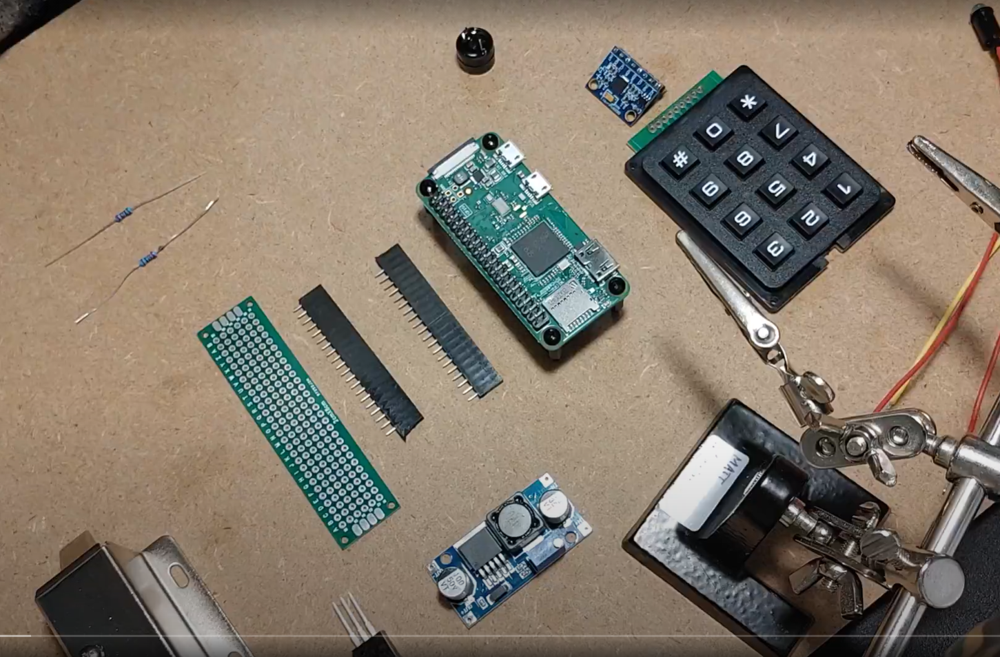
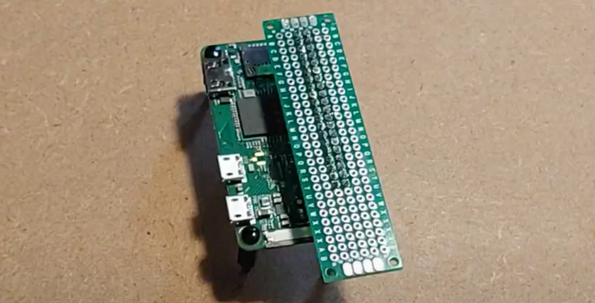
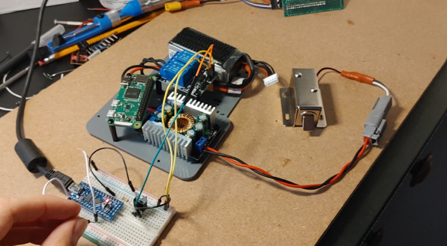
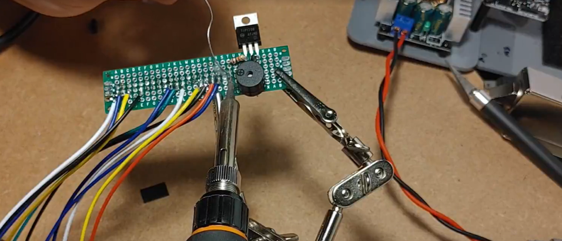
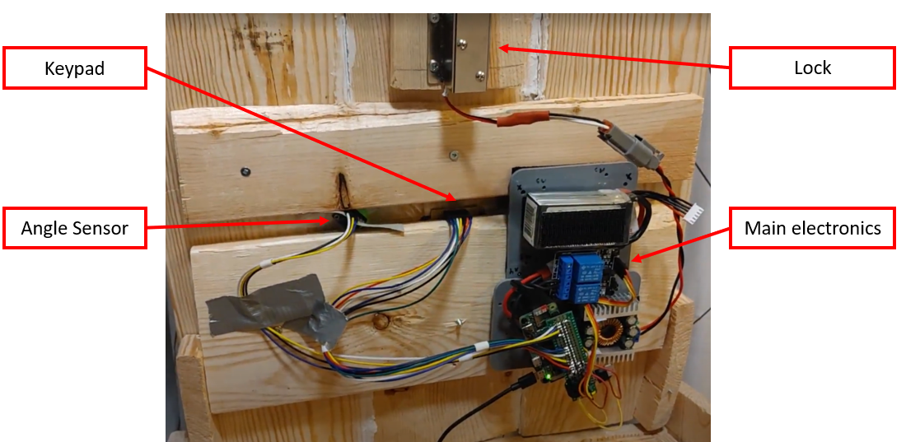
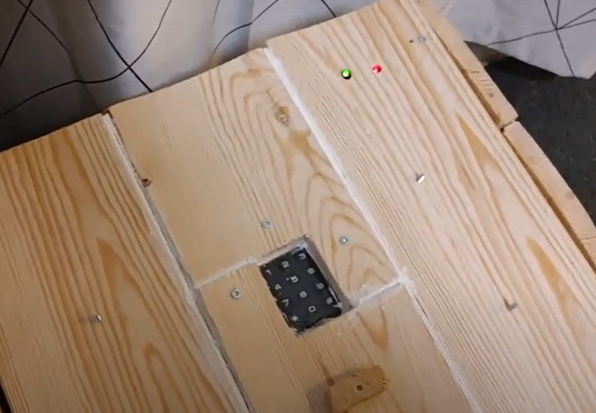
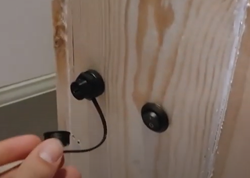

Soldering
It was decided that a perforated board, or perfboard, would carry most of the discrete electrical components, since it could easily slide on an off of the Pi.


Next, wiring harnesses for the gyro and keypad were cut and crimped into dupont connectors. thsi allowed for ease of switching out faulty components. The relay, LiPo battery, and solenoid were also wired up using custom cables and connectors.
A benchtop test was performed using the discrete components and a breadboard.

After confirming that the circuit design was correct, the perfboard was populated with all discrete components and bus wires. These included the keypad, gyro, speaker, LEDs, resistors, diode, transistors, and the solenoid control wire.

The components wer fixed to an acrylic platform using 3M dual-lock adhesive-backed strips, providing stabuility while allowing simple replacement of components. For prototyping purposes, tape was used in some areas like fixing the gyro in place.

After the construction of the box was complete, through-holes were added for the LEDs, charging port, and main power switch.

